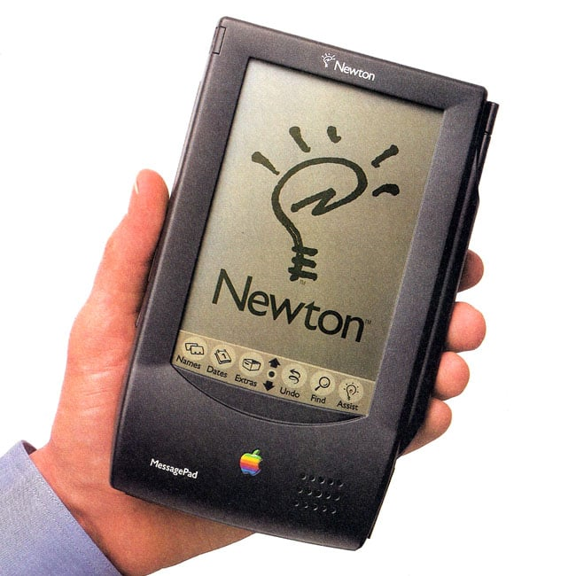
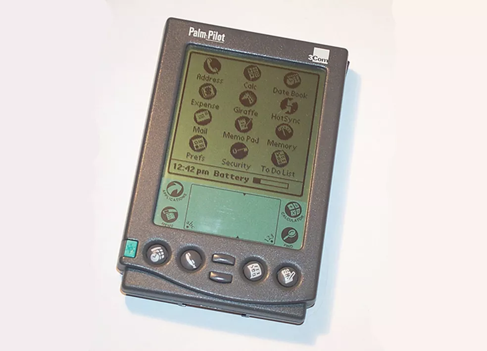
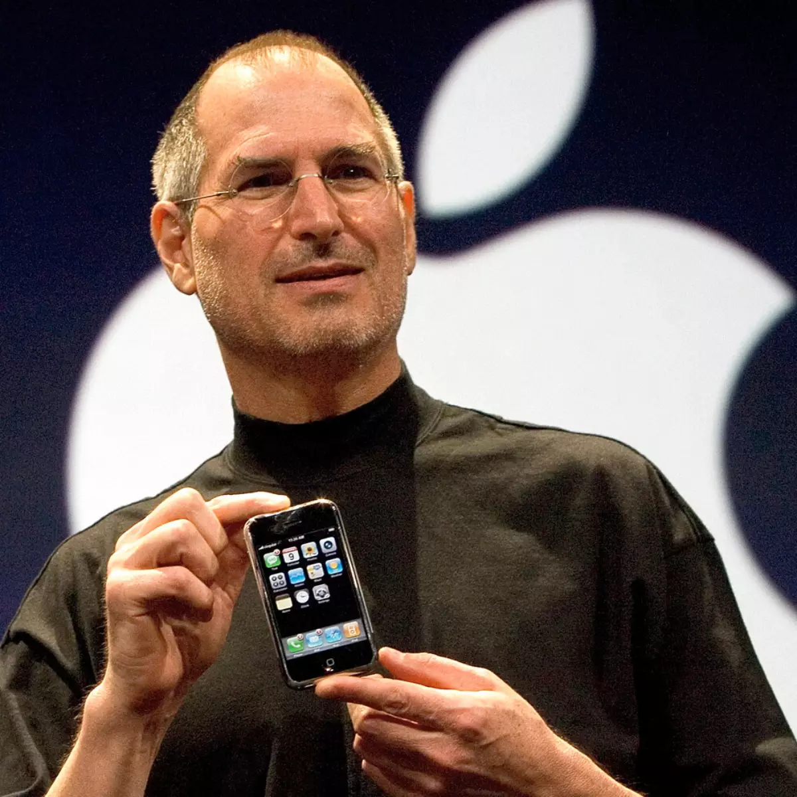
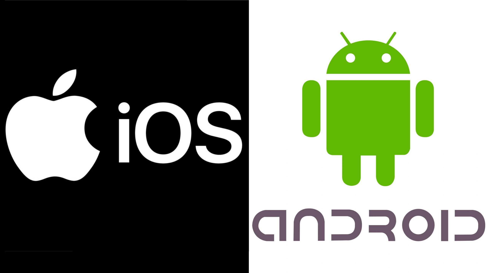
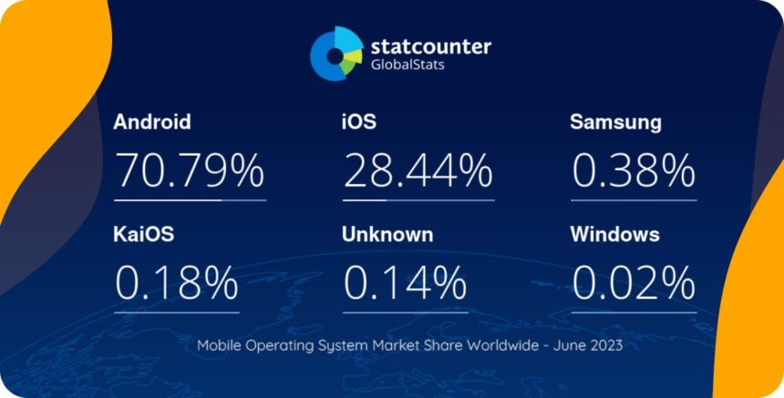

Disciplinas
DESENVOLVIMENTO PARA DISPOSITIVOS MÓVEIS. Concluído
Materiais
[UFMS Digital] Desenvolvimento Dispositivos Móveis - Módulo 1 - Unidade 1 - Vídeo 1 sendProf° ministrante: Dr. Rafael dos Passos Canteri.
Desenvolvimento móvel.
- Quantidade de dispositivos móveis só tem aumentado.
- Dispositivos: “computadores” com acesso à Internet.
- Plataformas móveis expandindo para outros meios.
- Carros,
- TVs,
- Relógios,
- Eletrodomésticos,
- ...
- A redução do preço dos aparelhos celulares,
- tornou-os mais acessíveis;
- possibilitou a aquisição dos mesmos por parte da população com menor poder aquisitivo.
- No Brasil, em 2023, ao todo, são 249 milhões de celulares inteligentes (smartphones) (FGV, 2023).
- Mais de 1 por habitante, em uso.
- Hoje, vendem-se quatro smartphones a cada computador, tanto no Brasil quanto nos EU
aracterísticas da Computação Móvel.
- Tamanho de tela, perspectiva;
- Bateria (hardware, software);
- Memória;
- Processamento;
- Comunicação;
- Sensores.
Histórico da Computação Móvel.
- Na visão dos dispositivos móveis a computação móvel começou em meados de 1993.
- Através do lançamento do handheld chamado Newton MessagePAD, pela Apple.
- O modelo não emplacou.
- Ele era muito grande, pesado e caro, mas é considerado o início dos dispositivos móveis.
- PDA (Personal Digital Assistant).
- Computadores de dimensões reduzidas.
- Funções de: agenda, multimídia, softwares de escritório, conexão de rede, acesso a e-mail e internet.
- Palm, principal fabricante de PDAs, iniciou as vendas em 1996.
- Palm tops.


Smartphones.
- Em 9 de janeiro de 2007, Steve Jobs revelou ao mundo o primeiro iPhone.
- Mudou para sempre o mundo da Computação e da Telefonia Móvel.
- Antes: funções de despertador, reprodução de músicas em mp3 e alguns joguinhos básicos.
- Smartphones: celular + computador.
- Softwares completos.

Principais Plataformas.
- Hoje em dia, o mercado é basicamente dividido entre Android e iOS.
- Já existiram outras plataformas com relativo sucesso no passado:
- Windows Phone
- Windows Mobile
- Java Micro Edition - Java ME, J2ME
- BlackBerry
- Symbian

Fatia de Mercado - Plataformas.

Tipos de Aplicações Móveis.
- Aplicações nativas.
- Definição:
- Desenvolvidas especificamente para um sistema operacional (iOS ou Android), usando linguagens e ferramentas nativas.
- Exemplos de tecnologias:
- iOS: Swift, Objective-C (Xcode).
- Android: Kotlin, Java (Android Studio).
- Vantagens:
- Performance superior (otimizadas para o SO).
- Acesso total a recursos do dispositivo: Câmera, GPS, sensores, notificações push.
- Experiência de usuário (UX) fluida: Segue os padrões de design do sistema (Material Design para Android, Human Interface Guidelines para iOS).
- Desvantagens:
- Custo mais alto: Desenvolvimento e manutenção separados para cada plataforma.
- Tempo de desenvolvimento maior.
- Casos de uso:
- Apps que exigem alto desempenho (jogos, apps de edição).
- Integração profunda com hardware (ex.: apps de realidade aumentada).
- Aplicações web.
- Definição:
- São sites responsivos acessados via navegador, sem instalação. Podem ser PWAs (Progressive Web Apps).
- Tecnologias: HTML, CSS, JavaScript (React, Angular, Vue.js).
- Vantagens:
- Multiplataforma: Funcionam em qualquer dispositivo com navegador.
- Atualizações instantâneas: Mudanças são feitas no servidor.
- Custo reduzido: Desenvolvimento único.
- Desvantagens:
- Funcionalidades limitadas: Não acessam todos os recursos do dispositivo.
- Performance inferior em tarefas complexas.
- Dependência de conexão à internet (a menos que seja um PWA com cache offline).
- Casos de uso:
- Apps informacionais (blogs, catálogos).
- PWAs para engajamento (ex.: Twitter Lite, Spotify Web).
- Aplicações híbridas.
- Definição:
- Combinam elementos nativos e web. São desenvolvidas com tecnologias web (HTML, CSS, JS) e encapsuladas em um container nativo (ex.: Cordova, Ionic, React Native).
- Vantagens:
- Código único para múltiplas plataformas.
- Acesso a recursos nativos: Plugins permitem usar câmera, GPS, etc.
- Custo e tempo reduzidos comparados ao desenvolvimento nativo.
- Desvantagens:
- Performance intermediária: Menos eficiente que apps nativos em tarefas pesadas.
- UX menos personalizada: Pode não seguir totalmente os padrões de cada SO.
- Casos de uso:
- Apps que precisam de acesso moderado a hardware (ex.: apps de delivery, redes sociais).
- Projetos com orçamento limitado e necessidade de multiplataforma.